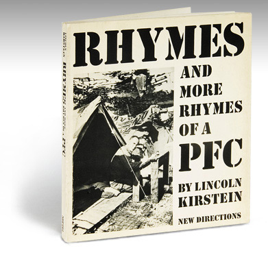
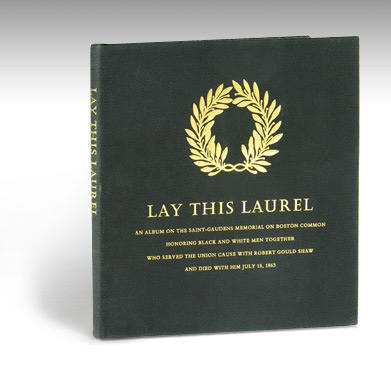
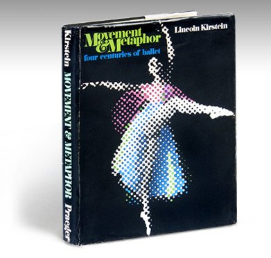
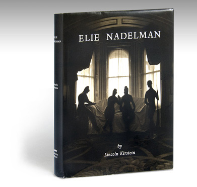
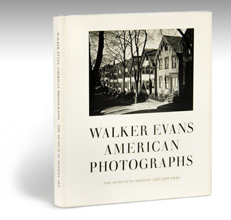
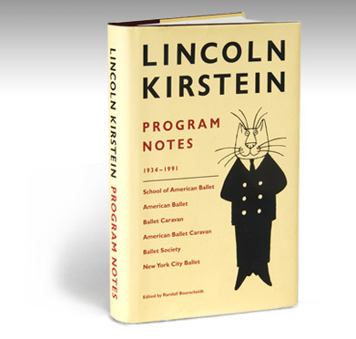
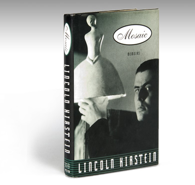

Lincoln Kirstein, 1929, by Isamu Noguchi
Fiction | Poetry | Drama & Ballet Libretti | On Dance
On Drawing, Painting, Sculpture & Architecture
On Photography | On Film | On Music & Drama
On Literature, History, Politics & Other Subjects | Memoir
Lincoln Kirstein was one of America's most important cultural figures. Co-founder, with George Balanchine, of the School of American Ballet and the New York City Ballet, he was also a great patriot and champion of the arts in America. Read More »
Kirstein wrote extensively, with force and erudition on all that interested him. This web site presents a thorough listing, with excerpts and illustrations, of the writings published throughout his protean life. On these pages the reader will find an unmatched record of American cultural history--which will inform future generations in perpetuity--set forth through the prism of one of the great minds of the 20th century.
© Eakins Press Foundation & Ballet Society, Inc., | Resources